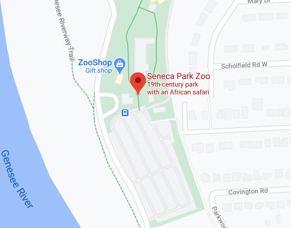
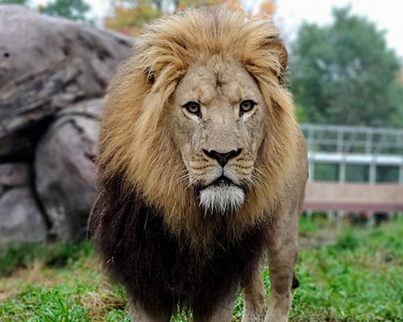
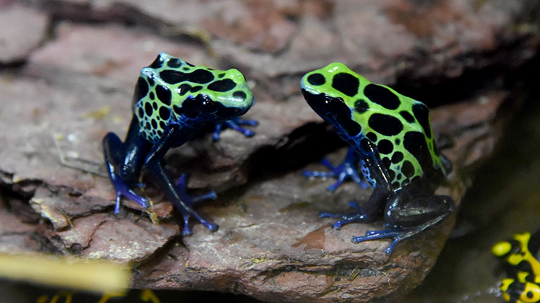

Lions, Tigers, Bears, and much more can be found beyond the gates of Seneca Park Zoo! Boasting a wide variety of animals within their menagerie, you're sure to find a friend within each unique enclosure.
Ranging from massive to miniscule, scaled to soft, each animal is well cared for and rehabilitated to eventually move on from their enclosures to the wilds. And with constant renovations, the Seneca Park Zoo looks to accomplish this task with greater speed each year!
Ticket prices vary per season, and visiting hours have changed due to ongoing health concerns.

Do you like Bald Eagles? How about Otters? Maybe your inclinations lean more carnivores like Wolves, Tigers, Lions, or Lynx. Maybe you enjoy the bigger creatures like Elephants, Rhinos, and Polar Bears? Regardless of what your preference may be, the outdoor enclosures are sure to have what you're looking for!
Walking the 1.3 mile long stretch across the zoo will introduce you to all sorts of creatures big and small, and even the walk itself is an adventure. If you're accompanying children (or you're a child at heart yourself), you can get an even closer look at some of the animals through domed, glass, observatory tunnels; it could also be said that it gives them a closer look at you!

If you're one to enjoy the smaller things in life, than the indoor exhibits are sure to brighten your day! Frogs of varying sizes and shapes can be found alongside an entire room of tropical birds; snakes of varying poison are, for better or for worse, found adjacent to their cold-blooded neighbors.
Of course, with every major hotspot, there's sure to be a gift shop. So although you can't bring one of your new friends home with you, you can pick up stuffed animals in their likeness before you leave.